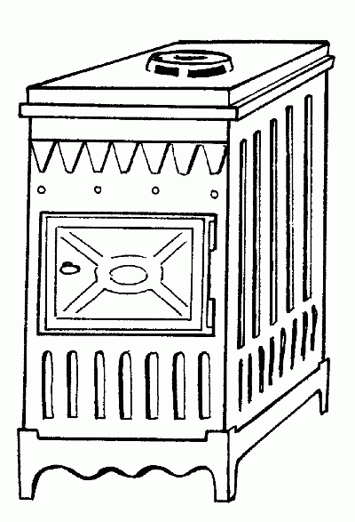

Как сохранить тепло.

Согреть дачу можно не только с помощью камина или печи. Главное не то, как отапливается помещение, а то, как тепло покидает его. Если быстро, потребуется очень много дров, если медленно, не имеет смысла тратить лишние средства на постоянно включенный камин. Главный принцип – не отапливать улицу. А для этого необходимо знать некоторые правила, которые позволят сохранить электроэнергию или топливо.
Первая топка – дело ответственное. Вообще прочность печной кладки и работа печи во многом будут зависеть от сушки. Сложив печь, ее нужно правильно высушить. Необходимо открыть все дверцы, поддувала, вьюшки и оставить так печь на 1–2 недели. После этого печь затапливают в первый раз. В нее следует класть столько дров, чтобы лишь слегка обогреть печь. Во время первой топки все дверцы должны быть открыты. Данную операцию следует повторить несколько раз в течение недели, постепенно увеличивая количество топлива и время работы печи.
Когда вы приезжаете на дачу, а на улице стоит устойчивая холодная погода, первым делом вы хотите согреть дом. Если вы пользуетесь обогревателем, то, включив его, через некоторое время замечаете лишь небольшое поднятие столбика градусника. В чем может быть причина?
Хотя, используя масляные радиаторы, и рекомендуется проветривать дом, держать открытой форточку и греть улицу все же не стоит. Для того чтобы обогреватель использовался с максимальной эффективностью, окна и двери должны быть плотно прикрыты.
При строительстве дома следует уделить большое внимание устройству теплоизоляции. Веранду следует поднять на столбиках и оградить воздушное пространство с помощью теса или металлической полосы и засыпать ее землей. Воздушная подушка под полом значительно утеплит помещение. Это следует помнить и при возведении дачных домов.
Помните следующее правило: для увеличения температуры на 1оС необходимо увеличение расхода электроэнергии на 6%. Таким образом, для помещения размером примерно 4 х 4 м достаточно использовать обогреватель мощностью 1,2 кВт.
Не следует злоупотреблять режимом быстрого нагрева, через 10 минут работы переключите обогреватель в экономичный режим.
Теплоизоляционные материалыКлимат России значительно суровее, чем Европы и США. Как же сохранить тепло в доме, изолировать его обитателей от шума и обеспечить гидроизоляцию.
Сегодня на российском рынке представлено огромное количество теплоизоляционных материалов. Однако не все они способны выдержать суровые климатические условия и надежно защитить от потерь тепла. Исследования показали, что основным видом применяемых в России утеплителей являются минераловатные материалы, реже, примерно в 35% случаев, используют пенопласты.
Минеральная вата – общее название всех волокнистых неорганических материалов, используемых для строительной теплоизоляции. По исходному материалу они делятся на 3 типа:
– каменная вата;
– стекловата;
– шлаковата.
Сырьем для производства каменной ваты служат горные вулканические породы, поэтому она удовлетворяет самым жестким требованиям пожарной безопасности. Температура спекания волокон составляет 1000оС. Далеко не все виды продукции, классифицированные как негорящие, могут обладают такими свойствами. Крупнейшим производителем высококачественных строительных теплоизоляторов из каменной ваты является концерн «Paroc» (Финляндия).
Стекловату производят следующим образом: стеклообразующую смесь (стеклобой, песок, сода и известняк) расплавляют при температуре более 1400оС.
В центробежном волокнообразователе стекло распускают на волокна толщиной 6 микрон, которые затем пропитывают смолой и вулканизуют при температуре 250оС. Из стекловолокнистого полотна и двусторонней защитной оболочки состоит сравнительно новый изоляционный материал «Термозвукоизол». При своей незначительной толщине он характеризуется высокими теплофизическими и акустическими показателями.
Эластичность и малый вес теплоизоляционной минеральной ваты делает ее установку легкой и удобной. Изделия из нее не подвержены температурной деформации. В местах примыкания к каркасу и на стыках плит не образуются зазоры, которые могли бы вызвать утечку тепла и стать центрами конденсации влаги. И каменное, и стекловолокно негигроскопично, содержание влаги при нормальных условиях эксплуатации составляет менее 0,5% по объему.
Изделия из минеральной ваты обладают высокой стойкостью к органическим веществам. В течение последних 50 лет минерало– и стекловатные изоляционные материалы не раз подвергались тщательной проверке. Данные проведенных исследований доказали, что производство и применение минеральной ваты – экологически безопасны.
Кроме тепло-, звуко-, пожаростойких свойств, изделия из минеральной ваты обладают еще одной очень важной характеристикой – сопротивляемостью механическим воздействиям.
Область применения минераловатной продукции не ограничена, она не требует специальных навыков при монтаже. Мягкие минераловатные плиты и базальтовые прошивные маты идеально подходят для теплоизоляции внутренних стен зданий, перегородок, потолков и полов, мансард, щитовых конструкций. Плотность базальтового мата – 30 кг/м3. При толщине 5 см такой мат по теплоизолирующей способности равен стене в два кирпича. Из минеральной ваты изготавливаются плиты для теплоизоляции стен из сборного железобетона (сэндвич-панели), плоских кровель.
Давно известны и широко применяются в строительстве вспененные полиэтилены и полистиролы, как отечественные (пеноизол, изолон), так и зарубежные (например, ППС-плиты, «Стиродур» производства Германии, «Термафлекс» производства Голландии.
Чаще всего используются пенополиэтилены, имеющие плотность от 20 до 80 кг/м3. Именно в этом диапазоне плотностей достигаются наиболее востребованные у строителей характеристики для вспененных полиэтиленов: отличная теплоизоляция, хорошая защита от акустического и ударного шумов, эластичность, уплотняющие и гидроизоляционные свойства.
При описании пенополиэтилена пользуются двумя терминами: «сшитый» и «несшитый». Эти термины знакомы и в России, но применяются большей частью к модифицированным полиэтиленовым трубам. Термин «несшитый» относится к вспененным полиэтиленам, в структуре которых молекулы полимера не имеют между собой химических связей. Термин «сшитый» относится к вспененным полиэтиленам, в процессе получения которых за счет различных методов молекулярная структура полиэтилена модифицируется и в результате сшивки образуется так называемая поперечно-связанная, или сетчатая, молекулярная структура.
В чем же суть сшивки пенополиэтилена? Она увеличивает такие важнейшие параметры пенополиэтилена, как теплостойкость (рабочий температурный интервал сшитых пенополиэтиленов, как правило, на 20–30° С выше несшитых), стойкость к органическим растворителям, нефтепродуктам, повышенная устойчивость к УФ-лучам и атмосферным явлениям, что продлевает срок службы и самого материала. Таким образом, сшитые пенополиэтилены отличаются от несшитых лучшими характеристиками. По разным причинам в рекламных листах и сопроводительной технической документации на пенополиэтилены эти термины просто не упоминаются. Это связано также и с тем, что подавляющее большинство пенополиэтиленов на российском рынке относится именно к несшитым, называемым еще газонаполненными.
Вспененный полиэтилен-изолон является достойным конкурентом как известным, так и сравнительно новым теплоизоляционным материалам. Ижевский завод пластмасс выпускает на российский рынок две марки изолона: ППЭ и НПЭ.
ППЭ – физически сшитый вспененный полиэтилен с диапазоном плотности от 33 до 200 кг/м3и рабочим температурным интервалом от –60 до 100оС. Благодаря своей закрытоячеистой структуре он обладает отличными теплоизоляционными свойствами, низким водопоглощением, эластичностью, стойкостью к гниению, экологической и гигиенической безопасностью.
1 см изолона ППЭ по теплоизоляционным свойствам равен 1,2 см пенополистирола, 15 см кирпичной кладки, 1,5 см минеральной ваты, 4,5 см дерева.
Изолон марки НПЭ – несшитый вспененный полиэтилен с диапазоном плотности 20–30 кг/м3и рабочим температурным интервалом от –80 до 80оС. Изолон выпускают в рулонах и листах толщиной 1–50 мм. Его легко смонтировать термопистолетом, скобами или строительным скотчем.
Экструдированный твердый пенополистирол предназначен для тепловой изоляции стен, крыш, полов, для облицовки фасадов. Чаще всего это плиты длиной от 900 до 5000 мм, шириной от 500 до 1300 мм, толщиной от 20 до 500 мм. Возможно изготовление плит других размеров. Несъемная опалубка имеет длину 1200 мм, ширину 250 мм и толщину 250 мм.
Свойства эструдированного пенополистирола.
– удельная масса – 300–370 кг/м2;
– водопоглощение по объему за год – 2%;
– время самостоятельного горения – не более 2 секунд;
– диапазон рабочих температур – до 90оС;
– звукопоглощение – 45–50 дБ.
Дом, построенный на основе элементов несъемной опалубки из пенополистирола, «дышит». Этот материал практически не впитывает влагу, не содержит веществ, которые могут стать питательной средой для бактерий, плесени, грибков. В нем не заводятся мыши и крысы.
К органическим растворителям, например к уксусу или ацетону пенополистирол практически не стоек. Не опасными для него являются цемент (например, при оштукатуривании стен) и битум на этапе пластификации.
При длительном воздействии высоких температур пенополистирол сохраняет формоустойчивость. Низкие температуры не оказывают влияния на его свойства, поэтому цикл замораживания-оттаивания просто отсутствует, что исключает появление трещин в несущих конструкциях. Экспертиза гарантирует их долговечность (до 200 лет).
Пенополистирол является самозатухающим материалом и не распространяет пламя, что подтверждено Государственной противопожарной службой МВД России.
Особо следует отметить отсутствие у него капиллярного поглощения воды и высокое сопротивление диффузии водяных паров. Он является экологически чистым материалом и не выделяет вредных веществ во внешнюю среду.
В ограждающих конструкциях с использованием пенополистирола разница температур между наружной и внутренней стенами составляет всего 0,9оС. Это создает комфорт в помещениях и сокращает затраты на отопление.
Плита из пенополистирола толщиной всего 12 см по своим теплосберегающим свойствам эквивалентна 1,5-метровой стене из деревянного бруса или 2-метровой стене из кирпича. По своим теплоизолирующим характеристикам этот материал превосходит известные традиционные утеплители.
Для утепления полов подходят как листовой материал, так и политерм, представляющий собой гранулы пенополистирола, обработанные адгезивным составом. Такой пол сочетает в себе теплоту деревянного и прочность железобетонного. Кстати, фермеры в Подмосковье первыми стали активно использовать политерм для утепления пола.
Для теплоизоляции крыш пенополистирол прокладывают в зависимости от конструкции крыши – свободно или между стропилами, приклеивают или механически крепят к основанию. Для утепления стен на внешнюю сторону кирпичной кладки наносят слой пенопласта, а сверху – слой специальной штукатурки или вентилируемую облицовочную оболочку. Можно устанавливать пенополистирол внутрь пустотелой кирпичной кладки на специальные штыри.
В зависимости от плотности приблизительная цена плиты пенополистирола составляет от 600 до 1500 руб. за 1 м3; политерма – 750 руб. за 1 м3; несъемной опалубки – от 350 руб. за 1 м3стены.
Для различных условий эксплуатации выпускается широкий ассортимент изоляционных материалов «Термафлекс» в виде трубок диаметром от 6 до 114 мм с толщиной стенок от 6 до 25 мм, плит и рулонов. Изоляция со специальными покрытиями (резиной, алюминия, пленкой) защищает от влияния агрессивных сред, пара и УФ-лучей. Наиболее наглядно преимущества изоляции «Термафлекс» проявляются при использовании ее в системах холодоснабжения, кондиционирования, вентиляции и отопления. Однако следует помнить о том, что затраты на сохранение холода всегда выше затрат на сохранение тепла.
Экологически чистый, пожаробезопасный материал пеноизол применяется для тепловой изоляции в качестве срединного слоя ограждающих конструкций, для утепления полов, стен, потолков и крыш жилых и промышленных зданий.
Этот отечественный утеплитель сравнительно недавно появился на строительном рынке, но уже завоевал прочные позиции. Пеноизол не горит после удаления источника пламени, не образует расплавов, не выделяет под воздействием пламени высокотоксичных веществ.
Стоек к действию большинства агрессивных сред, органических растворителей, грибков и микроорганизмов. Легко режется без нагрева любым предназначенным для этого инструментом.
Утепление здания пеноизолом толщиной 10 см снижает затраты на отопление в несколько раз, покрывая их за один отопительный сезон. Плита пеноизола толщиной 50 мм с жесткой наружной облицовкой соответствует по теплопроводности почти метровой кирпичной кладке и поглощает до 65% звуковых колебаний.
Теплоизоляционный пеноизол выпускают в виде плит 500 х 600 мм при толщине 50–150 мм, крошки в полиэтиленовых пакетах по 0,12 м3. Также его заливают непосредственно на объекте утепления в заранее подготовленные полости – профили, где он полимеризуется и высыхает в нормальных условиях.
Гибкий, легкий, экологически чистый комбинированный материал пенофол представляет собой слой вспененного полиэтилена, с одной или двух сторон покрытый алюминиевой фольгой высокого качества. Он относится к группе отражающей изоляции. При своей малой толщине пенофол обладает хорошими тепло-, паро– и шумоизоляционными свойствами. Высокая эффективность материала обусловлена низкой теплопроводностью полиэтилена и высокими отражающими характеристиками алюминиевой фольги.
Широко используются в строительстве стеновые пенобетонные блоки. Пенобетон – легкий ячеистый бетон, получаемый в результате твердения раствора, состоящего из цемента, песка и воды, а также пены. Применяемая технология обеспечивает необходимое содержание воздуха в бетоне и его равномерное распределение по всей массе в виде замкнутых ячеек и блоков, толщину кладочного шва 2–3 см и исключает образование в стене мостиков холода. Пенобетон обладает высокими тепло– и шумозащитными качествами, высокой противопожарной устойчивостью, материал долговечен, экологически чист.
Все технологии отделки фасадов из кирпича, бетона, шлакоблоков и т. д. применимы и для пенобетона. Однако вследствие возможности высокой плотности укладки блоков, отсутствия зазоров, отпадает необходимость в оштукатуривании стен. Обычный размер блоков – 400 х 200 х 200 мм.
Еще одна теплосберегающая строительная технология – «канадский» дом. Деревянные дома в России возводились испокон веков, а дерево служило основным строительным материалом. Но в последние десятилетия все более популярными стали бетонные и кирпичные дома.
Правда, в России дома строились по принципу сруба, а в Канаде и США были популярны деревянно-каркасные. Такие дома возводят уже более 200 лет. Правительством, строительными и проектными организациями этих стран были вложены сотни миллионов долларов в усовершенствование деревянно-каркасной технологии для достижения наивысших показателей по экологичности, комфортности жилья и энергосберегаемости.
Деревянный каркас собирается по принципу сотовой структуры и представляет собой очень жесткое и прочное сооружение. Стена «канадского» дома при средней толщине 310 мм полностью удовлетворяет требованиям новых норм по теплосбережению.
Дерево значительно превосходит большинство строительных материалов по сопротивлению теплопотерям, а в сочетании с эффективными утеплителями делает дом комфортным и экономичным. Расчеты показывают, что расходы на горячее водоснабжение и отопление в «канадских» домах на 1 м2в 9 раз ниже таких же показателей для каменного дома.
«Канадский» дом обладает массой других преимуществ. Внутренние коммуникации спрятаны в стены. Идеальные поверхности стен и потолков способствуют высококлассной отделке. Гибкость технологии позволяет воплотить любые архитектурные замыслы по планировке помещений. У «канадского» дома лучшее соотношение цены и качества. Стоимость 1 м2каркасной стены в 1,3 раза дешевле стены из бруса, в 1,7 раз – пенобетонных блоков и в 2,2 раза – стен из кирпича при одинаковой теплосберегающей способности.
Основу стен составляет несущий деревянный каркас, обшитый ориентированными стружечными плитами.
По расходу материала и трудоемкости каркасные стены самые экономичные. Они требуют в 1,5–2 раза меньше древесины, чем бревенчатые и брусчатые и при использовании эффективного утеплителя во столько же раз легче. Каркасные стены не подвержены усадке и могут быть отделаны сразу же после установки.
Снаружи стены покрывают ветрозащитным материалом «Tyvek». В наружных стенах внутреннее пространство заполняют утеплителем. Дополнительное заполнение утеплителем межкомнатных перегородок и перекрытий уменьшает теплопотери, снижает шум и избавляет от сквозняков, сохраняя микроклимат в каждом помещении.
Внутреннюю отделку обычно выполняют листами гипсокартона, которые крепят поверх парозащитной пленки для предотвращения отсыревания утеплителя и деревянных конструкций.
Различные типы утеплителей позволяют использовать одни и те же типы домов как в южных районах страны, так и в северных. Деревянный каркас дома можно монтировать даже в условиях вечной мерзлоты и в сейсмически опасных районах.
Батареи центрального отопленияОдна из главных причин низкой температуры в домах с центральным отоплением – проблема с батареями. Старые чугунные со временем засоряются, да и теплопроводность чугуна сравнительно низкая. Современные батареи делают из стали. По коэффициенту теплоотдачи с ним могут посоперничать разве что биметаллические. Причем эти батареи не ребристые, а гладкие, как полотно ткани, с узкими вертикальными прорезями. Площадь поверхности такой батареи довольно велика, а высота не 20–30 см, как у старых радиаторов отопления, а 50 см. То есть они занимают почти все пространство от пола до подоконника.
В продаже встречаются и алюминиевые батареи. Хотя теплопроводность алюминия может быть и выше, чем у стали, в обычных квартирах их использовать не рекомендуется. Дело в том, что вода, циркулирующая по трубам, содержит различные примеси. Примеси, вступая в химическую реакцию с алюминием, могут привести к образованию водорода, батареею начнет распирать, и она в итоге лопнет. Такие радиаторы можно использовать только в коттеджах, где система отопления заполняется специальными теплоносителями.
Прежде чем сделать покупку, нужно узнать давление в отопительной системе. Как правило, оно не должно превышать 10 атмосфер. Такое давление выдерживают практически любые радиаторы.
Если же давление выше, то выбирать модель нужно очень тщательно.
Если необходимость заменить батарею возникла в то время, когда отопительный сезон уже начался, это нужно согласовать с котельной.
Большая часть тепла радиаторов расходуется впустую. Вместо того чтобы обогревать помещение, тепло впитывается стенами. В этом отношении меньше всего повезло блочным домам. Используемый при их производстве бетон обладает высоким уровнем теплоусвоения, но низким коэффициентом теплоотдачи. То есть бетонные стены хорошо впитывают тепло, но плохо его отдают. Чтобы этого не происходило, между стеной и батареей устанавливают специальные теплосберегательные экраны. В качестве таких экранов можно использовать выкрашенные серебряной краской листы фанеры. Если зазор между стеной и батареей слишком мал, можно ту же краску нанести на стену или прикрепить на нее обычную фольгу.
Но больше всего тепла теряется через окна.
Обычные стекла легко пропускают тепло. Несмотря на то что окна к зиме хорошо подготовлены и загерметизированы, часть тепла все равно пойдет на улицу. Это можно исправить, если на наружное стекло со стороны, обращенной к помещению, нанести пленку. Тогда тепло будет сохраняться в квартире.
Пленка должна быть селективной, с особым металлическим напылением. Металл как раз и будет отражать инфракрасное (оно же тепловое) излучение, не выпуская его на улицу. Причем после нанесения такой пленки стекло останется по-прежнему прозрачным.
Тепловой аккумулятор ТА-1Тепловой аккумулятор предназначен для накопления тепловой энергии в период времени, когда имеется ее избыток, сохранения в течение 1–6 суток с последующей отдачей теплоты потребителю.
Область применения: экономия тепла в зданиях, коттеджах, а также в технологических процессах, когда имеется периодический выброс тепловой энергии. Особыми преимуществами обладает в комбинации с гелиотеплоутилизирующими системами.
Перспективен также при накоплении тепловой энергии в ночное время и отдаче ее в дневные часы, при этом экономия достигается за счет разницы тарифов на стоимость электроэнергии в дневное и ночное время.
Тепловой аккумулятор основан на поглощении тепловой энергии специальным твердым дисперсным материалом без фазового перехода. Аккумулированная тепловая энергия может забираться водой, воздухом или за счет теплопроводности.
Кроме того, тепловой аккумулятор обладает большим ресурсом работы и подавляет развитие вредных микроорганизмов в рабочем объеме.
Тепловой аккумулятор оснащен теплопередающими устройствами, позволяющими регулировать поступление и потребление тепловой энергии. Внешняя поверхность теплового аккумулятора оснащена теплоизоляцией.
БуржуйкаБуржуйка до сих пор пользуется огромной популярностью и спросом среди дачников для отопления садового дома, теплиц и других построек. Буржуйка популярна по простой причине – дешевле ее только костер на полу. Кроме того, буржуйка долговечна и, как правило, имеет разборную структуру, что очень удобно в плане перевозки. К недостаткам буржуйки относятся следующие:
– на нее тратится очень много топлива при низком КПД;
– малая тепловая емкость. После прогорания дров буржуйка моментально остывает, попытки обложить буржуйку кирпичем ни к чему не приводят.
В этом случае тепловая емкость увеличивается несущественно, а теплообмен между стенками печи и воздухом помещения уменьшается очень резко, что приводит к сильному перегреву буржуйки и, соответственно, к увеличению пожароопасности и сокращению срока службы буржуйки. Низкая эффективность буржуйки заложена в ней конструкционно, так как мал объем самой топки. Для более или менее полного и оптимального сгорания топлива высота топки должна быть не менее 40 см, поэтому при выборе буржуйки лучше выбрать печь чугунную садовую (рис. 4), так как из-за наличия камеры дожига объем топки у нее больше и КПД в 1,5 раза выше, чем у буржуек типа ОВ-1 и ОВ-2.

Рис. 4. Печь садовая чугунная